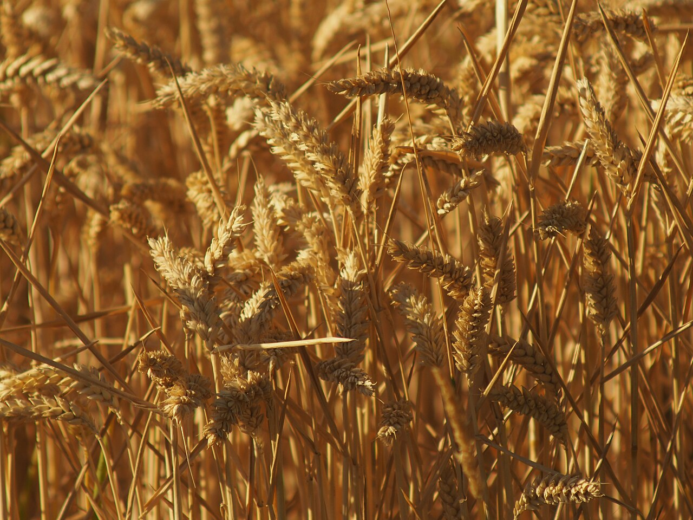
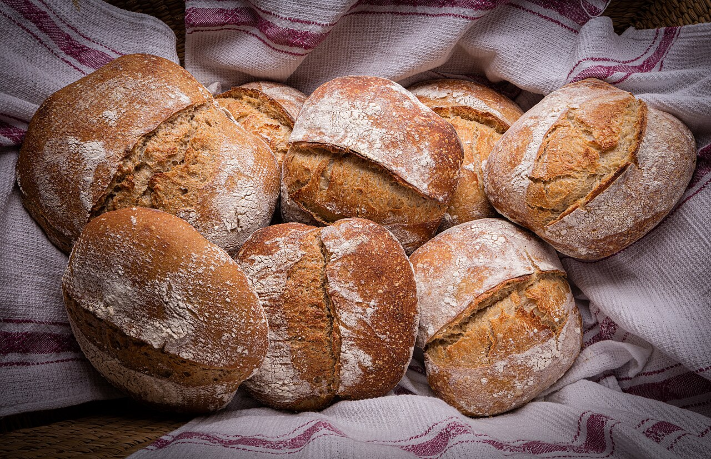
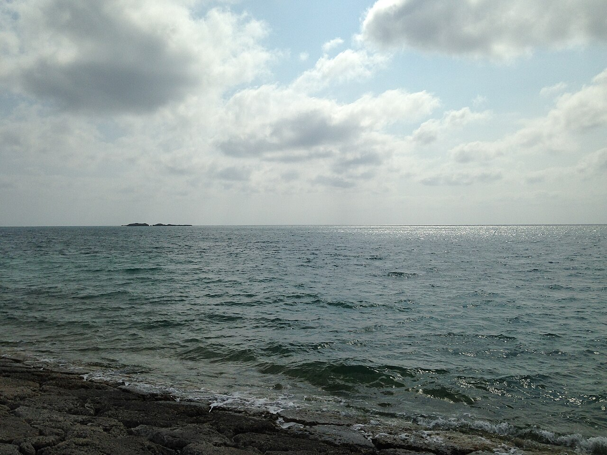

cReare fata牧港
お買い物のついでに、パンをひとつ。
買い物かごの隣に、ひと袋。コープ牧港店内のパン屋です。
掲載の写真はイメージです(フリー素材)。お店の実際の写真ではありません。背景写真は麦畑の朝(イギリス・ケンブリッジ近郊撮影、イメージ・撮影地は店舗と無関係)。
寄り道メモ
- 場所コープ牧港店内(沖縄県浦添市牧港4丁目3-15)
- 電話で問い合わせ070-9184-4859
- 最新情報Instagram(@creare_fata)でご確認ください
今日の買い物メモの、ひと息ぶん





写真はイメージです。お店の実際の商品・店内ではありません。
まだ準備中のこと
- 営業時間
- 準備中(お問い合わせください)
- 料金
- 準備中(お問い合わせください)
- メニュー
- 準備中(お問い合わせください)
確認でき次第、お知らせします。お急ぎの方はお電話でどうぞ。